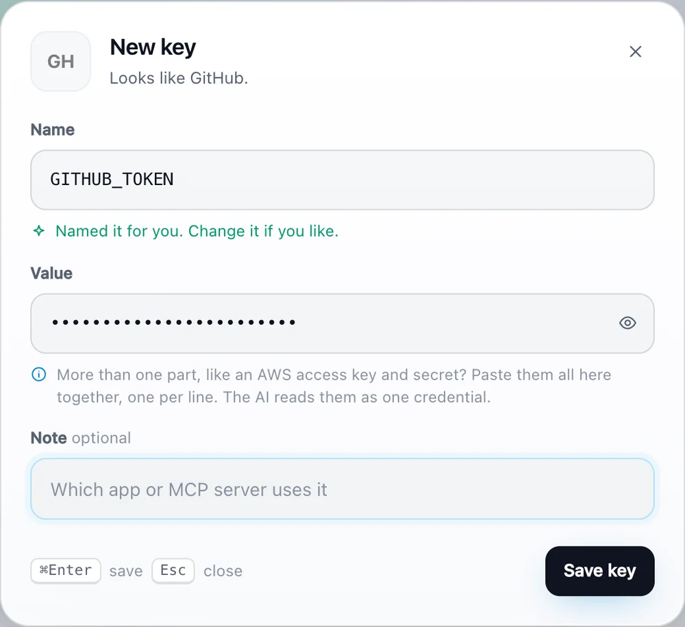
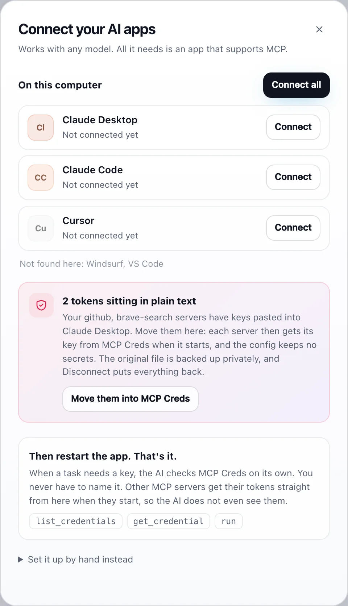

Smart paste
Recognises 20+ services from the key itself and names it for you. Paste ghp_..., get GITHUB_TOKEN.

MCP Creds is a tiny local app for the tokens behind Claude, Cursor, VS Code and every MCP server. Save a key once and your AI fetches it. Nothing ever leaves your machine.
macOS (Apple silicon), Windows and Linux. Or run from source: python3 mcpcreds.py ui
Works with every app that speaks MCP
With any model: Claude, GPT, Gemini, Llama, Mistral or your own.
Every new MCP server wants its own key in its own JSON file, in plain text. Rotate a token and you hunt through all of them.
claude_desktop_config.json, mcp.json, .env files, and wherever else you pasted it last.
{ "github": { "command": "npx", "args": ["-y", "server-github"], "env": { "GITHUB_TOKEN": "ghp_9f2kLmQx81zRtY7uW3" } } }
MCP Creds hands the key to the server when it starts. One click moves your existing tokens over.
{ "github": { "command": "MCP Creds", "args": ["run", "-e", "GITHUB_TOKEN", "--", "npx", "-y", "server-github"] } } // no token here. Rotate it once, in one place.
Copy a token anywhere and press Cmd V in the app. It spots the service and names the key for you. Or drop in a .env or your existing MCP config.
One click finds Claude, Cursor, VS Code and the rest on your computer and plugs MCP Creds in. Each config is backed up first, and Disconnect puts it back.
"List my open pull requests." When a task needs a key, the AI checks MCP Creds on its own. You never have to name it or paste it.
Built for people who juggle more tokens than they can remember.
Recognises 20+ services from the key itself and names it for you. Paste ghp_..., get GITHUB_TOKEN.

Finds the AI apps on your computer and connects them all. Spots tokens sitting in plain text and moves them in.

Paste or drop a .env, a JSON file or your claude_desktop_config.json. Pick what to keep. Placeholders are skipped.
AWS access key, secret and session token? Paste them together as one key. The AI reads every part, and run hands each one to the right variable.
Start a server through MCP Creds and it gets its token as an environment variable. The config holds no secret and the AI never sees it.
Search by name, note or service. Reveal, copy, edit, export. Keyboard first: N new, Cmd K search. Light and dark mode.
One JSON file on your disk. No account, no server, no telemetry, no dependencies. Read the code in an afternoon.
No magic, no marketing. Here is exactly how your keys are kept.
~/.mcpcreds/store.json, readable only by your user (folder 0700, file 0600). Atomic writes.~/.aws/credentials or a .env file.A small desktop app that keeps all the API keys and tokens your AI apps need in one local file. You save a key once, connect MCP Creds to your AI apps once, and they fetch keys from it through the Model Context Protocol (MCP), the standard plug-in system for AI apps.
Yes. MCP Creds talks to the app, not the model. Any model works inside any app that supports MCP: Claude Desktop, Claude Code, Cursor, Windsurf, VS Code and others. Apps without MCP support cannot use it.
No. MCP Creds tells the AI to check it whenever a task needs a key. Just ask for the task. For other MCP servers, the token is handed over at startup, so the AI does not need to do anything.
Start the server through MCP Creds: python3 mcpcreds.py run -e GITHUB_TOKEN -- npx your-server. It sets the saved key as an environment variable and starts the server. In the app, "Move them into MCP Creds" rewrites your existing configs this way for you.
Paste them together into one key, one per line, or let MCP Creds split them into separate keys. The AI is told to read every part, and run -e AWS_SECRET_ACCESS_KEY=AWS_CREDENTIALS hands just the right part to a server.
No. There is no cloud, account or telemetry. Keys stay in ~/.mcpcreds/store.json on your machine. The code is open source, so you can check.
The app is not notarized by Apple yet. Right-click it in Applications and choose Open the first time. After that it opens normally. Prefer not to? Run it from source with python3 mcpcreds.py ui.
Yes. Free and open source under the MIT license. Issues and pull requests are welcome on GitHub.
Free, open source and local. Set up in a minute.